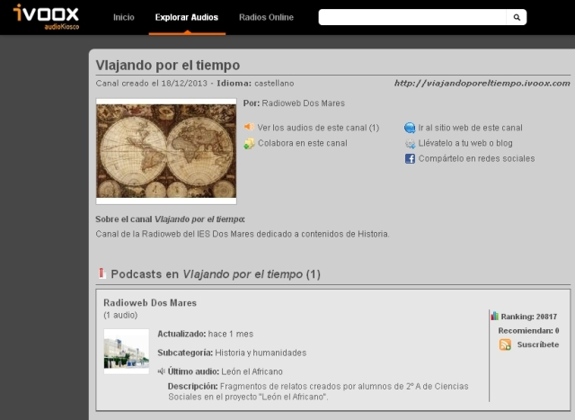

Retroalimentación
En el proceso de realización de esta tarea vamos a distinguir las siguientes fases:
Elección de la modalidad del programa y del tema
En clase, elegirán el tema y el tipo de programa que más les motiva de cara a realizar su grabación en audio. Es importante que todos los temas propuestos sean trabajados por algún grupo.
En caso de repetirse un tipo de programa o tema, se mostrarán diferentes acontecimientos que giren sobre ese mismo eje y se buscarán enfoques complementarios. Por ejemplo, si se escogen dos noticiarios sobre la Revolución Francesa, se dedicarán a diferentes momentos del proceso revolucionario. O si se opta por dos programas de debate, en ellos aparecerán diferentes pensadores del siglo XIX.
Redacción de la escaleta del programa
Para confeccionarla, puedes emplear la siguiente ficha para la elaboración de una escaleta de radio.
Antes de proceder a la grabación del programa, tendr que escribir la escaleta o su índice de contenidos secuenciado temporalmente. La escaleta del programa se organiza mediante un documento de texto dividido en varias columnas. En ellas se irán recogiendo las intervenciones de cada personaje, los efectos de sonido y la música que se añade, así como la temporalización de estos elementos.
Es fundamental que todo el contenido del programa esté preparado de antemano. No solo el texto que van a leer los personajes, sino también el resto de los efectos de sonido, así como la música que se va a emplear.
Grabación del audio y selección del material sonoro
A partir del diseño realizado en la escaleta, procederéis a la grabación de vuestras voces reproduciendo el texto que habéis escrito. Para ello, usaréis un ordenador con micrófono y guardaréis el resultado de vuestro trabajo en formato mp3. Podéis emplear otros dispositivos como grabadoras, teléfonos móviles o tablets.
Después, necesitáis recopilar el resto de material sonoro del podcast recurriendo a páginas web que publican y comparten fragmentos de audio cuyo uso no esté restringido por derechos de autor y que se relacionan en el apartado "Recursos para la tarea" de este documento.
Edición de vuestro podcast
En esta fase os concentraréis en la edición del podcast, empleando el programa de software libre Audacity. Para manejarlo correctamente, es imprescindible que consultéis los tutoriales que se incluyen en el apartado "Recursos para la tarea". Es importante que exportéis vuestro trabajo en un solo archivo de formato mp3.
Publicación del podcast.
Una vez que hayáis completado el proceso de edición y que el resultado haya sido supervisado por vuestro profesor, procederéis a la publicación del podcast en la web Ivoox, en la cuenta y el canal correspondientes creados para ello. Podéis visitar, difundir a través de diferentes redes sociales y comentar el trabajo realizado por otros compañeros del grupo.

Canal de audio creado en Ivoox. Víctor Marín.
Tras completar vuestro trabajo, habréis creado un interesante canal de audio dedicado a contenidos históricos. Será una maravillosa manera de usar el pasado para poder entender mejor cómo vivimos en el presente.
Para obtener una buena calificación en esta tarea aseguraos de:
- Escribir una escaleta completamente organizada y en la que no quede ningún elemento para la improvisación. Revisad que todo el texto del podcast está atribuido a diferentes personajes y miembros del grupo. Del mismo modo, también deben aparecer reflejados los efectos de sonido y las piezas musicales que acompañan a cada uno de los fragmentos del programa.
- Ensayar el desarrollo del programa antes de proceder a su grabación, comprobando que los tiempos de la escaleta son realistas y que los efectos de sonido y la música introducen los efectos expresivos deseados.
- Grabar el podcast con los mejores medios técnicos a vuestro alcance. Cuanto mejor sea el micrófono del dispositivo que usáis para grabar, mayor será la calidad de sonido de vuestro producto final.
- Editar el audio con el programa Audacity prestando atención al desarrollo de cada pista por separado y a la visión de conjunto. Es recomendable que uséis alguno de los efectos de sonido que contiene la aplicación, sobre todo para regular la intensidad del sonido de cada uno de los canales de audio y limpiar el archivo final de impurezas y efectos no deseados.